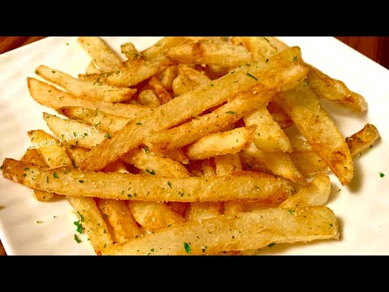

Papas Fritas
Receta de papas fritas caceras

Ingredientes
- 3 o 4 papas(100gr)
- Aceite
- Sal
- Cilantro
Elaboración (Pasos)
- Pelar las papas
- Cortalas en bastón
- Calentar aceite en un sarten
- Cocinar hasta que esten doradas
- Removerlas del aceite
- Salar y Espolvolear Cilantro